Imaginez qu’avec une ficelle vous fassiez le tour de la terre. Puis vous
rajoutez un mètre à cette ficelle et vous ceinturez à nouveau la terre.
À quelle distance du sol va alors se trouver la ficelle ?
Même question avec une balle de tennis.
Si r est le rayon de la terre en mètre (ou de la balle de tennis), son
périmètre est donc : 2π r. La ficelle va donc mesurer 2π r+1 et
cela correspond à un rayon R vérifiant 2π r+1=2π R.
Donc 2π (R−r)=1 c’est à dire R−r=1/(2π).
On tape :
evalf(1/2/pi)
On obtient :
0.159154943092
Donc quelque soit le rayon de la sphère la ficelle va être à environ
15.9 cm de la surface de la sphère.
Ce théorème, très ancien, a été démontré par Hippocrate de Chios
(-500) (Ne pas le confondre avec Hippocrate de Cos, le médecin), qui étudia
aussi la duplication du cube, c’est-à-dire le calcul de la racine cubique de 2.
Hippocrate recherchait alors la quadrature du cercle et pensait que la
quadrature de ses lunules allait le rapprocher du but.
Une lunule est une portion de surface délimitée par deux arcs de cercles
non concentriques de rayons différents. Ces arcs ont mêmes extrémités et
forment un croissant de lune en forme de ménisque : convexe d’un côté et
concave de l’autre.
Construction
Soit le triangle ABC rectangle en A et C le cercle circonscrit
à ABC (de diamètre BC).
La lunule LAC est la figure formée par le demi-disque de diamètre AC
extérieur au triangle ABC, auquel on enlève son intersection avec le disque
délimité par C.
La lunule LAB est la figure formée par le demi-disque de diamètre AB
extérieur au triangle ABC, auquel on enlève son intersection avec le disque
délimité par C.
Ces deux lunules sont appelées lunules d’Hippocrate.
Alors la somme des aires de LBC et de LBA (en jaune) est égale à
l’aire du triangle ABC (en rouge).
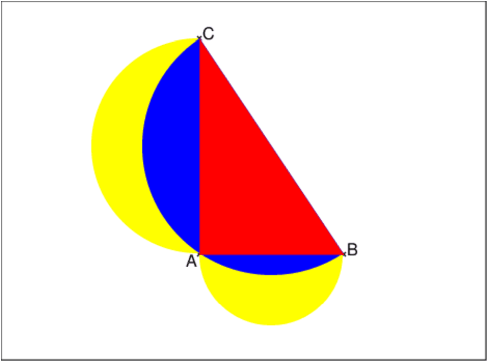
On calcule S1 l’aire du triangle ABC :
S1=AB*AC/2
On calcule S2 la somme des aires de LBC et de LBA :
S2 est obtenue par différence : S2 est égale à la somme des aires des
demi-cercles de diamètres AB et AC à laquelle on enlève l’aire en
bleu.
L’aire en bleu est égale à l’aire du demi-cercle de
diamètre BC à laquelle on enlève l’aire S1 du triangle ABC :
S2=AB2/2+AC2/2−(BC2/2−S1)
D’après le théorème de Pythagore on a : AB2+AC2=BC2 donc :
S2=S1.
Pour faire la figure on a tapé :
A:=point(0); B:=point(2,affichage=quadrant1); C:=point(3*i,affichage=quadrant1); cercle(A,C,0,pi,affichage=3+rempli); cercle(A,B,-pi,0,affichage=3+rempli); cercle(B,C,0,pi,affichage=4+rempli); triangle(A,B,C,affichage=1+rempli);
Xcas sait remplir de couleur les polygones et les secteurs circulaires.
On est donc obligé de procéder par superposition de couleur pour remplir
les lunules d’Hippocrate et cela symbolise les opérations que l’on fait pour
calculer l’aire des 2 lunules.
Exercice
Soient un carré de côtés l et les cercles ayant comme
diamètre les côtés du carré.
À l’extérieur du carré, ces cercles déterminent avec le cercle
circonscrit au carré 4 lunules.
Trouver l’aire des 4 lunules ainsi déterminées.
À l’intérieur du carré, ces cercles en se coupant déterminent 4
"pétales".
Trouver l’aire des 4 "pétales" ainsi déterminées.
La solution
Un carré est formé de 2 triangles rectangles donc l’aire des 4 lunules est
égale à l’aire du carré.
La somme de l”aire du carré et de l’aire des "pétales" est égale à
l’aire des 4 demi-cercles de rayon l/2 donc
l’aire des "pétales"=l2/2−l2
On perce un cercle de rayon R avec un cercle de même centre et de rayon r. Quelle est l’aire de ce cercle troué. Exprimer cette aire en fonction de
d=√R2−r2.
On sait que l’aire d’un cercle de rayon R est : π R2
L’aire du cercle troué est donc :
| π(R2−r2)=π d2 |
L’aire d’un cercle troué est égale à l’aire du cercle de rayon d où d est la longueur de la demi-corde qui est tangente au trou.
On note R le rayon de la spère, r le rayon de la base de la calotte et
h la hauteur de la calotte et on suppose que 0<h<R. 0n a donc :
r2=R2−(R−h)2
On tape :
assume(R>0 and h>0 and h<R)
On calcule une intégrale triple :
∫02*π(∫0r(∫0√R2−r2dz)*ρ dρ)dθ
On tape :
^2-ro^2))*ro,^2-(R-h)^2)),t,0,2*pi))
On obtient :
(h^2*pi*(3*R-h))/3
Donc le volume de la calotte de hauteur h d’une spère de rayon R est :
| VC=π h2 |
|
Vérification
On sait que le volume d’une sphère de rayon R est : 4/3π R3
Le volume de 2 calottes sphériques de rayon R a pour hauteur R est :
2π R23*R−R/3=4/3π R3
On perce une sphère de rayon R avec un cylindre ayant pour axe un
diamètre de la sphère et comme base un cercle de rayon r. Quelle est le
volume de cette sphère trouèe. Exprimer ce volume en fonction de
d=√R2−r2.
Avec les notations précédentes on a enlevé à la sphère :
un cylindre ayant comme base un cercle de rayon r comme hauteur 2d et
comme volume 2π r2d=2π (R2−d2)d et,
2 calottes sphériques ayant comme base
un cercle de rayon r et ayant comme hauteur h=R−d.
On sait que le volume d’une sphère de rayon R est : 4/3π R3
Le volume de cette sphère trouèe est donc :
| π R3−2π h2 |
| −2π r2d |
On tape :
factor(2*pi/3*(2*R^3-(R-d)^2*(3*R-(R-d))-3*(R^2-d^2)*d))
On obtient :
(4*d^3*pi)/3
Donc le volume d’une spère de rayon R trouée par un cylindre d’axe un
diamètre et de hauteur 2d est :
| VST= |
| π d3 |
c’est à dire le volume d’une spère de rayon R trouée par un cylindre d’axe un diamètre et de hauteur 2d est égal au volume d’une sphère de rayon d.
On tape :
rectangle(-5,0,1/5):; carre(-5,-4,affichage=1+rempli); triangle(-4,-2,-2+i,affichage=2+rempli); triangle(-4,-2+i,-4+i,affichage=3+rempli); triangle(-2,0,-2+i,affichage=4+rempli); triangle(0,i,-2+i,affichage=5+rempli); carre(-3-5/2*i,-2-5/2*i, affichage=1+rempli)); triangle(-4-3/2*i,-2-3/2*i,-2-i/2,affichage=2+rempli); triangle(-4-3/2*i,-3-3/2*i,-3-7/2*i,affichage=3+rempli); triangle(-1-5/2*i,-3-5/2*i,-3-7/2*i,affichage=4+rempli); triangle(-1-5/2*i,-2-5/2*i,-2-i/2,affichage=5+rempli);
On obtient les 5 pièces du puzzle du rectangle 5*1 :
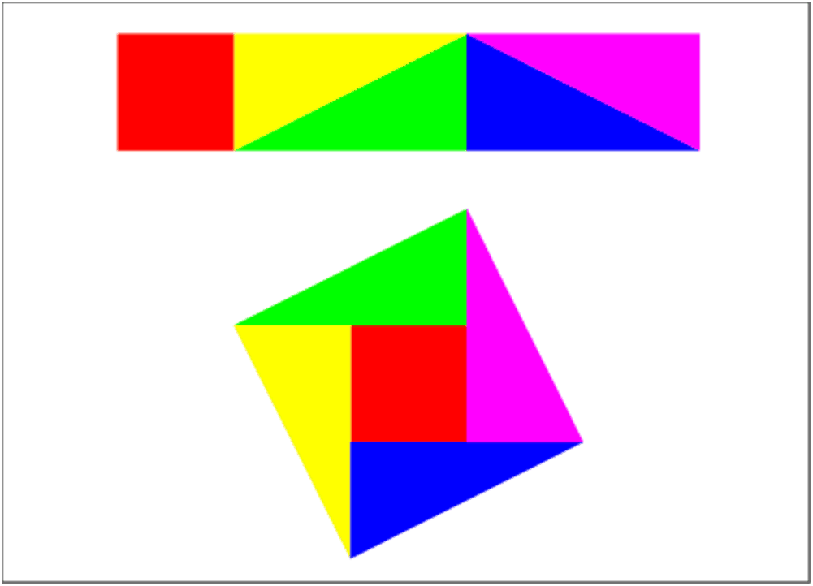
Soit un rectangle de longueur 3 unités et de largeur 2 unités.
On veut le partager en plusieurs morceaux pour pouvoir constituer avec
tous ces morceaux un carré.
On prend exemple sur le découpage précédent.
Le carré doit avoir comme côté √6 unités.
√6 est l’hypoténuse d’un triangle rectangle de côté 2 et
√2 (puisque 6=4+2=22+(√2)2=(√6)2.
On utilise la formule :
4*√2+(2−√2)2=6 et
On considère la droite D d’équation y=−√2x+2 (c’est la droite
portant l’hypoténuse du triangle 0,√2,2.
Puisque le point de coordonnées (1,2−√2) est sur la droite D, on
peut découper le rectangle selon les 5 morceaux ci-dessous.
Voici ce puzzle fait avec ces 5 morceaux mais on remarquera qu’il suffit de
découper le rectangle en seulement 3 morceaux !!!
On tape :
rectangle(0,3,2/3):; T1:=triangle(0,sqrt(2),2i):; affichage(T1,1+rempli); T2:=triangle(1+2*i,1+(2-sqrt(2))*i,3+2*i):; affichage(T2,2+rempli); T3:=triangle(3+2*i,1+(2-sqrt(2))*i,3+(2-sqrt(2))*i):; affichage(T3,3+rempli); T4:=triangle(2i,1+(2-sqrt(2))*i,1+2i):; affichage(T4,4+rempli); T5:=polygone(1+(2-sqrt(2))*i,sqrt(2),1+sqrt(2),1+sqrt(2)+(2-sqrt(2))*i):; affichage(T5,5+rempli); T6:=carre(1+sqrt(2),3):; affichage(T6,6+rempli); carre(sqrt(2)-2,2i-2):; affichage(translation(-2,T1),1+rempli); affichage(translation(-5,T3),3+rempli); affichage(translation(-5,T5),5+rempli); affichage(translation(-5,T6),6+rempli); affichage(translation(-3+sqrt(2)-2-2i,T2),2+rempli); affichage(translation(-3+sqrt(2)-2-2i,T4),4+rempli);
On obtient les 5 pièces du puzzle du rectangle 3*2 :
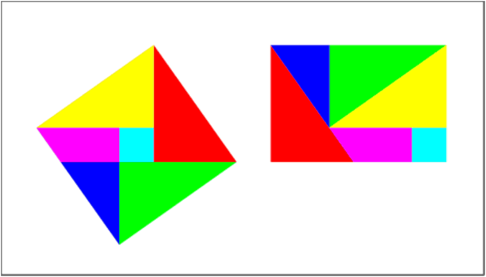
On obtient avec 3 pièces :
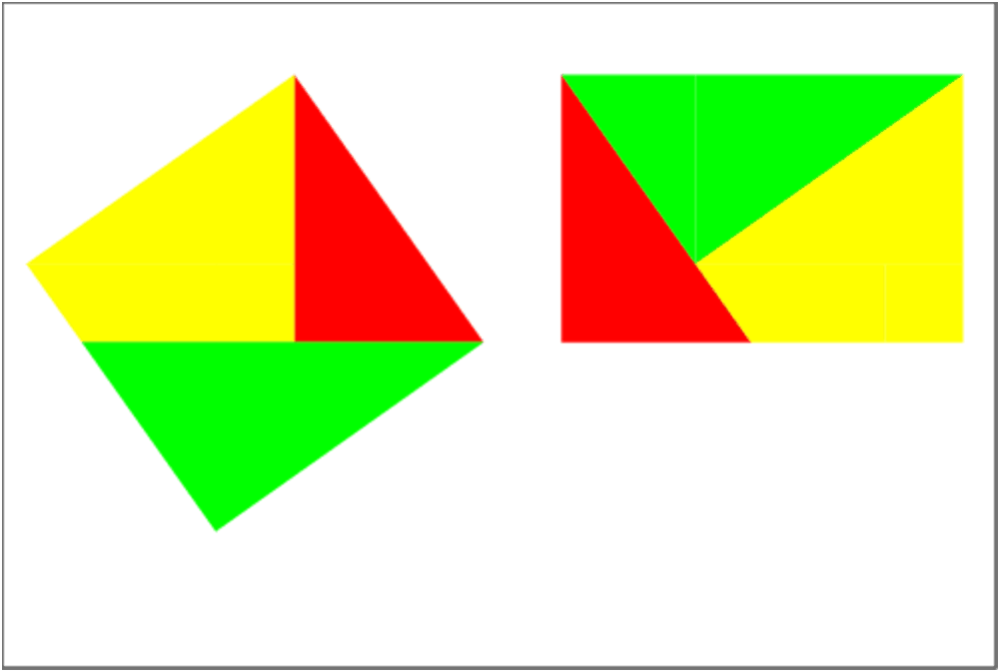
Autre solution
Soit un rectangle de longueur 3 unités et de largeur 2 unités.
On veut le partager en plusieurs morceaux pour pouvoir constituer avec
tous ces morceaux un carré.
Il reste ensuite à découper le rectangle (3−√5)*2 en 3 morceaux pour
en faire un carré selon la méthode de la section 8.9.
rappelons ce découpage sur cet exemple.
On tape :
b:=3;a:=2; A:=point(0); B:=point(b); C:=point(b+i*a); D:=point(i*a); rectangle(A,B,C,D); P:=point(sqrt(a*b)); M:=point(b-sqrt(a*b)+i*a); Q:=point(sqrt(a*b)*(1+i)); R:=point(sqrt(a*b)*i); S:=point(sqrt(a*b)+i*a); T:=point(sqrt(a*b)+i*(sqrt(a*b)-a)); carre(A,P,Q,R, affichage=rouge); segment(P,D); segment(B,M); segment(R,M,affichage=bleu); segment(P,S, affichage=vert);
On obtient :
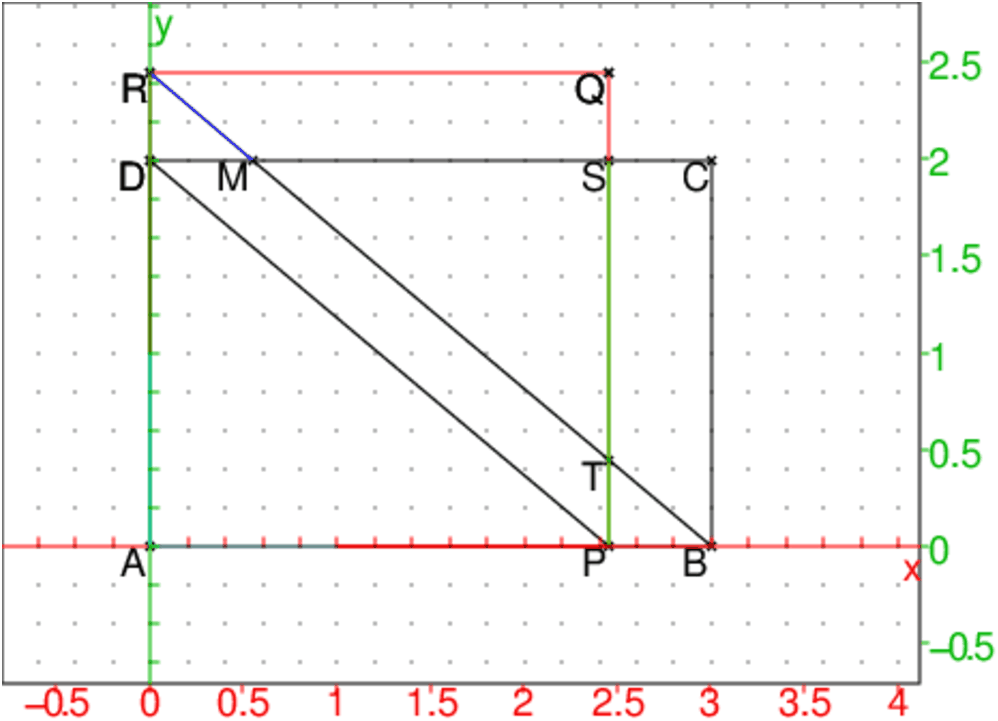
Les triangles RQP et MCB sont égaux,
les triangles RDM et TPB sont égaux,
donc les 3 pièces du puzzle sont les triangles MCB et TPB et le polygone
APTMD.
Puis on tape :
c:=3;
P1:=polygone(A,P,T,M,D,affichage=1+rempli);
T2:=triangle(T,P,B,affichage=2+rempli);
T4:=triangle(M,C,B,affichage=4+rempli);
affichage(translation(-c*i,P1),1+rempli)
affichage(translation(-sqrt(a*b)-c*i+a*i,T2),2+rempli);
affichage(translation(sqrt(a*b)-b-c*i+(sqrt(a*b)-a)*i,T4),
4+rempli);
On obtient les 3 pièces du puzzle du rectangle 3*2 :
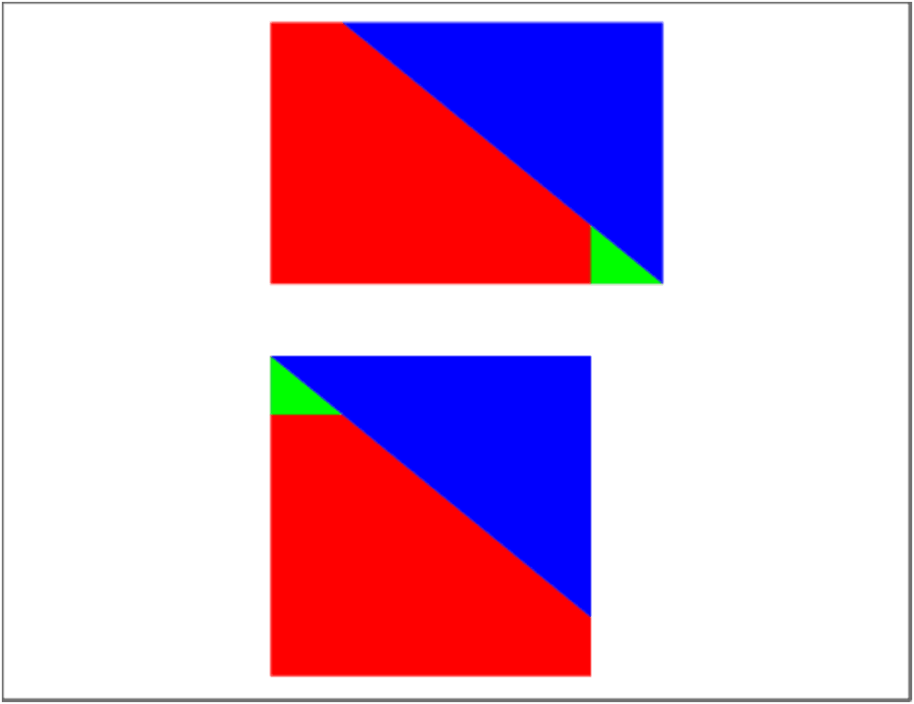
Autre solution
Soit un rectangle de longueur 3 unités et de largeur 2 unités.
On veut le partager en plusieurs morceaux pour pouvoir constituer avec
tous ces morceaux un carré.
On prend exemple sur le découpage précédent.
Le carré doit avoir comme côté √6 unités.
√6 est l’hypoténuse d’un triangle rectangle de côté 1 et
√5 (puisque 6=1+5=12+(√5)2=(√6)2.
On utilise la formule :
2*√5+(√5−1)2=6 et
Dans le rectangle 2*$sqrt 5, on découpe 4 triangles rectangles qui ont des
côtés de l’angle droit de longueur et 1 et √5.
Il reste ensuite à découper le rectangle (3−√5)*2 en 3 morceaux pour
en faire un carré selon la méthode de la section 8.9.
rappelons ce découpage sur cet exemple.
On tape :
b:=2;a:=3-sqrt(5); A:=point(0); B:=point(b); C:=point(b+i*a); D:=point(i*a); rectangle(A,B,C,D); P:=point(sqrt(a*b)); M:=point(b-sqrt(a*b)+i*a); Q:=point(sqrt(a*b)*(1+i)); R:=point(sqrt(a*b)*i); S:=point(sqrt(a*b)+i*a); T:=point(sqrt(a*b)+i*(sqrt(a*b)-a)); carre(A,P,Q,R, affichage=rouge); segment(P,D); segment(B,M); segment(R,M,affichage=bleu); segment(P,S, affichage=vert);
Puis on tape :
P1:=rotation(0,pi/2,polygone(A,P,T,M,D)):; affichage(P1,1+rempli); T2:=rotation(0,pi/2,triangle(T,P,B)):; affichage(T2,2+rempli); T4:=rotation(0,pi/2,triangle(M,C,B)):; affichage(T4,4+rempli); affichage(translation(2,P1),1+rempli); affichage(translation(-1+sqrt(5)-sqrt(5)*i+i,T2),2+rempli); affichage(translation(6-2*sqrt(5)+(sqrt(5)-3)*i,T4),4+rempli);
On obtient avec les 3 pièces qui formeront le carré central :
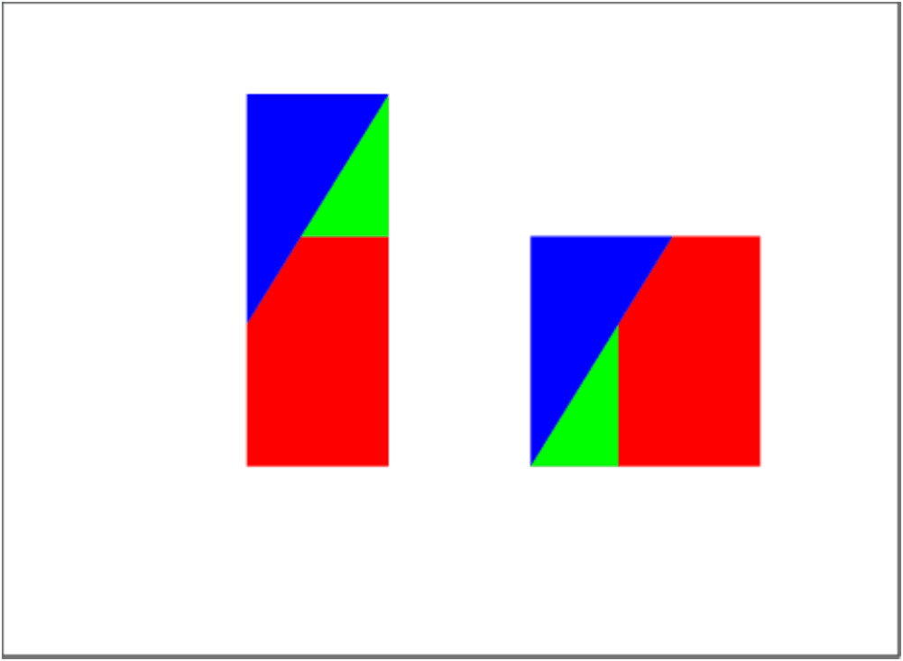
Pour faire les 7 morceaux, on tape :
rectangle(0,3,2/3):;
T1:=triangle(0,sqrt(5),i):;
affichage(T1,1+rempli);
T2:=triangle(i+sqrt(5),sqrt(5),i):;
affichage(T2,2+rempli);
T3:=triangle(i,sqrt(5)+i,2*i):;
affichage(T3,3+rempli);
T4:=triangle(2*i,sqrt(5)+2*i,i+sqrt(5)):;
affichage(T4,4+rempli);
T5:=polygone(sqrt(5),3, 3+i*(sqrt(5)-1),
i*(sqrt(5)-1)+7-2*sqrt(5), i*(3-sqrt(5))+sqrt(5)):;
affichage(T5,5+rempli);
T6:=triangle(3+2*i,2*i+sqrt(5),sqrt(5)+i*(3-sqrt(5))):;
affichage(T6,6+rempli);
T7:=triangle(3+i*(sqrt(5)-1),3+2*i,i*(sqrt(5)-1)+7-2*sqrt(5)):;
affichage(T7,47+rempli);
affichage(translation(-2*i-i/2,T5),5+rempli);
affichage(translation(4-2*sqrt(5)+sqrt(5)*i-5*i-i/2,T6),6+rempli);
affichage(translation(-3+sqrt(5)-sqrt(5)*i-i-i/2,T7),47+rempli);
affichage(translation(sqrt(5)*i-3*i-sqrt(5)+4-i/2,T1),1+rempli);
affichage(translation(-sqrt(5)+3-3*i-i/2,T2),2+rempli);
affichage(translation(-3*i-sqrt(5)+4-i/2,rotation(i,pi/2,T3)),
3+rempli));
affichage(translation(3-sqrt(5)+sqrt(5)*i-5*i-i/2,
rotation(sqrt(5)+2*i,pi/2,T4)),4+rempli));
On obtient les 7 pièces du puzzle du rectangle 3*2 :
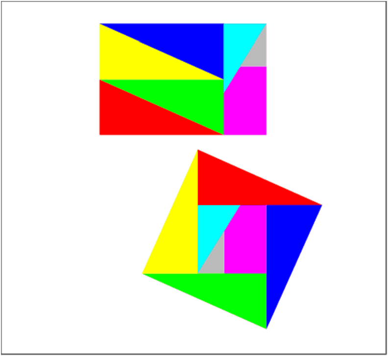
Autre solution
On fait 2 triangles rectangles (T1 et T2) de côtés √2,2,√6,
puis on fait 2 triangles rectangle (T5 et T6) pour constituer le carré
central de côté 2−√2. Puis on complète en respectant la symétrie.
On obtient 10 morceaux, on tape :
rectangle(0,3,2/3):;
T1:=triangle(0,2,sqrt(2)*i):;
affichage(T1,1+rempli);
T2:=triangle(3+2*i,1+2*i,3+(2-sqrt(2))*i):;
affichage(T2,2+rempli);
T3:=triangle(sqrt(2)*i+2-sqrt(2),sqrt(2)*i,2):;
affichage(T3,3+rempli);
T4:=triangle(1+2*i,1+sqrt(2)+(2-sqrt(2))*i,3+(2-sqrt(2))*i):;
affichage(T4,4+rempli);
T5:=triangle(sqrt(2)*i,2*i,2-sqrt(2)+sqrt(2)*i):;
affichage(T5,5+rempli);
T6:=triangle(3+(2-sqrt(2))*i,3,(2-sqrt(2))*i+sqrt(2)+1):;
affichage(T6,6+rempli);
T7:=triangle(2*i,1+2*i,1+i):;
affichage(T7,47+rempli);
T8:=triangle(1+2*i,1+i,2+i):;
affichage(T8,178+rempli);
T9:=triangle(2+i,1+i,2):;
affichage(T9,69+rempli);
T0:=triangle(2+i,3,2):;
affichage(T0,80+rempli);
affichage(translation(4.5,T1),1+rempli);
affichage(translation(4.5,
rotation(sqrt(2)*i,-pi/2,T3)),3+rempli);
affichage(translation(4.5-2*i,T5),5+rempli);
affichage(translation(3.5-sqrt(2)-(2-sqrt(2))*i,T6),6+rempli);
affichage(translation(3.5-sqrt(2)-4*i+sqrt(2)*i,T2),2+rempli);
affichage(translation(3.5-sqrt(2)-4*i+sqrt(2)*i,
rotation(3+(2-sqrt(2))*i,-pi/2,T4)),4+rempli);
affichage(translation(3.5-sqrt(2)/2-4*i+3*sqrt(2)/2*i,
rotation(1+2*i,pi/4,T7)),47+rempli);
affichage(translation(3.5-sqrt(2)/2-3*i+3*sqrt(2)/2*i,
rotation(1+i,-pi/4,T8)),178+rempli);
affichage(translation(4.5-sqrt(2)/2-i-sqrt(2)/2*i,
rotation(2+i,-pi/4,T9)),69+rempli);
affichage(translation(4.5-sqrt(2)/2-sqrt(2)/2*i,
rotation(2,pi/4,T0)),80+rempli);
On obtient les 10 pièces du puzzle du rectangle 3*2 :
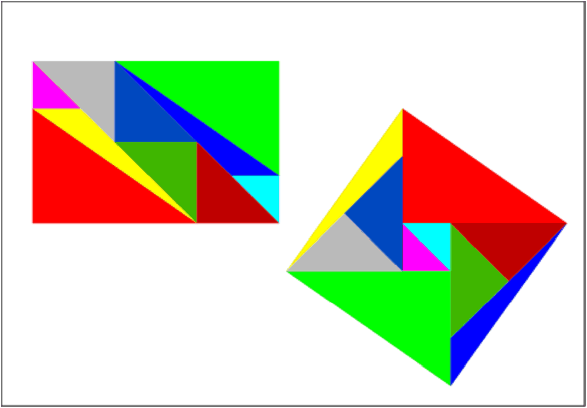
Soit un rectangle de longueur a+1 unités et de largeur a unités avec
a≥ 1 (pour avoir √a ≤ a).
On veut le partager en plusieurs morceaux pour pouvoir constituer avec
tous ces morceaux un carré.
On prend exemple sur le découpage précédent.
Le carré reconstitué a pour côté √a2+a unités.
√a2+a est l’hypoténuse d’un triangle rectangle de côté a et
√a (puisque a2+a=a2+(√a)2=(√a2+a)2.
On utilise la formule :
2a*√a+(a−√a)2=a2+a et
On considère la droite D d’équation y=−√ax+a (c’est la droite
portant l’hypoténuse du triangle 0,√a,a
.
Puisque le point de coordonnées (1,a−√a) est sur la droite D, on
peut découper le rectangle selon les 5 morceaux ci-dessous.
Voici ce puzzle fait avec ces 5 morceaux mais on remarquera qu’il suffit de
découper le rectangle en seulement 3 morceaux !!!
On tape :
supposons(a=[2,1.0,10.0,0.1]);
rectangle(0,a+1,a/(a+1)):;
T1:=triangle(0,sqrt(a),a*i):; affichage(T1,1+rempli);
T2:=triangle(1+a*i,1+(a-sqrt(a))*i,a+1+a*i):;
affichage(T2,2+rempli);
T3:=triangle(a+1+a*i,1+(a-sqrt(a))*i,a+1+(a-sqrt(a))*i):;
affichage(T3,3+rempli);
T4:=triangle(a*i,1+(a-sqrt(a))*i,1+a*i):;
affichage(T4,4+rempli);
T5:=polygone(1+(a-sqrt(a))*i,sqrt(a),1+sqrt(a),
1+sqrt(a)+(a-sqrt(a))*i):;
affichage(T5,5+rempli);
T6:=carre(1+sqrt(a),a+1):;
affichage(T6,6+rempli);
carre(sqrt(a)-a,a*i-a):;
affichage(translation(-a,T1),1+rempli);
affichage(translation(-2a-1,T3),3+rempli);
affichage(translation(-2a-1,T5),5+rempli);
affichage(translation(-2a-1,T6),6+rempli);
affichage(translation(-a-1+sqrt(a)-a-a*i,T2),2+rempli);
affichage(translation(-1-a+sqrt(a)-a-a*i,T4),4+rempli);
On obtient les 5 (ou 3) pièces du puzzle du rectangle (a+1)*a pour a=4 :
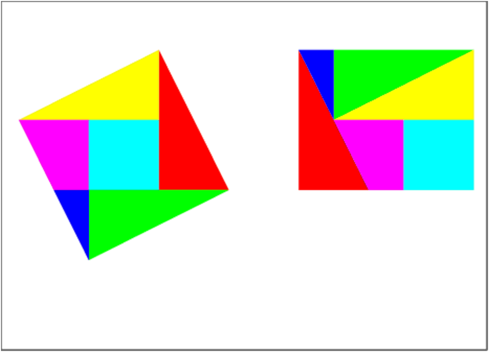

On obtient les 5 (ou 3) pièces du puzzle du rectangle (a+1)*a pour a=10 :
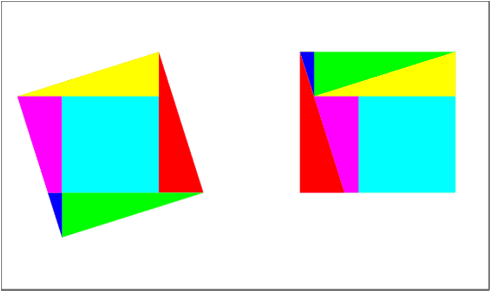
Soit un rectangle de longueur 3 unités et de largeur 1 unité.
On veut le partager en plusieurs morceaux pour pouvoir constituer avec
tous ces morceaux un carré.
Le carré reconstitué a pour côté √3 unités.
On utilise la formule :
2*√2+(√2−1)2=6
Donc le carré sera au centre a un côté de longueur √2−1 unités.
Voici ce puzzle fait avec ces 8 morceaux mais on remarquera qu’il suffit de
découper le rectangle en seulement 4 morceaux !!!
On tape :
rectangle(0,3,1/3):;
T1:=triangle(0,sqrt(2),i):;
affichage(T1,1+rempli);
T2:=triangle(3,3-sqrt(2)/2,3+i):;
affichage(T2,2+rempli);
T3:=polygone(2,2+i*(2-sqrt(2)),(2-sqrt(2))*(1+i),sqrt(2)):;
affichage(T3,3+rempli);
T4:=polygone(2,3-sqrt(2)/2,3+i,2+i):;
affichage(T4,4+rempli);
T5:=carre(2+i*(2-sqrt(2)),2+i):;
affichage(T5,5+rempli);
T6:=triangle(i,(2-sqrt(2))*(1+i),2-sqrt(2)+i):;
affichage(T6,6+rempli);
T0:=triangle(i+(2-sqrt(2))*3/2,(2-sqrt(2))*(1+i),2-sqrt(2)+i):;
affichage(T0,rempli);
T7:=polygone((i+(2-sqrt(2))*3/2,(2-sqrt(2))*(1+i),
3-sqrt(2)+(2-sqrt(2))*i),3-sqrt(2)+i):;
affichage(T7,47+rempli);
affichage(translation(2-2*i+i/2,T1),1+rempli);
affichage(translation(-1-2*i+i/2,T2),2+rempli);
affichage(translation(-3i-1+i/2+sqrt(2),T7),47+rempli);
affichage(translation(-3i-1+sqrt(2)+i/2,T5),5+rempli);
affichage(translation(-1+sqrt(2)-3*i+i/2,T4),4+rempli);
affichage(translation(-1+sqrt(2)-3*i+i/2,T3),3+rempli);
affichage(translation(-1+2*sqrt(2)-4*i+i/2,T6),6+rempli);
affichage(translation(-1+2*sqrt(2)-4*i+i/2,T0),0+rempli);
On obtient les 8 pièces du puzzle du rectangle 3*1 :
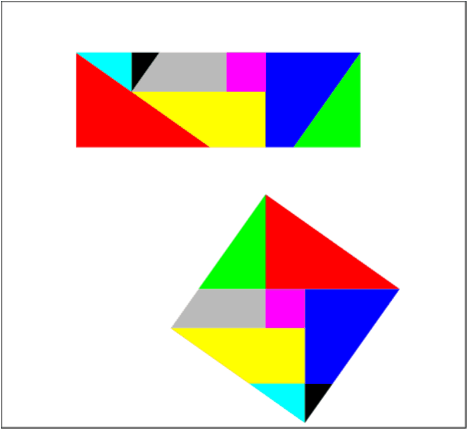
On obtient avec 5 pièces :
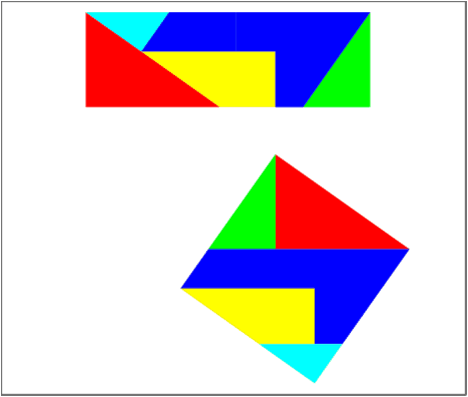
On construit donc un triangle rectangle T1 ayant comme côté 1 et
√2 : son hypothénuse a pour longueur √3.
T1 est le triangle PMR.
Puis on trace la perpendiculaire NM à PQ.
T2 est le triangle NMR.
Le triangle T3 (resp T4) est le symétrique de T1 (resp
T2) par rapport au centre du rectangle.
Le triangle OPR et son symétrique par rapport au centre du rectangle sont
des triangles rectangles isocèles (leurs côtés sont de longueur 1,1 et
√2).
Le triangle NMQ et son symétrique par rapport au centre du rectangle sont
des triangles rectangles isocèles (leurs côtés sont de longueur
√2 −1, √2 −1, 2-√2).
On tape :
rectangle(-4,-1,1/3); segment(-2,-2+i,affichage=ligne_tiret_pointpoint); segment(-3,-3+i,affichage=ligne_tiret_pointpoint); T1:=triangle(-4+i,-3,-3+(1+i)/sqrt(2)); O:=point(-4); M:=point(-3+(1+i)/sqrt(2),affichage=quadrant4); N:=point(-4+sqrt(2)+i,affichage=quadrant2); P:=point(-3); Q:=point(-2+i,affichage=quadrant2); R:=point(-4+i,affichage=quadrant2); T2:=triangle(-4+i,-3+(1+i)/sqrt(2),-4+sqrt(2)+i); T3:=symetrie(point(-5/2+i/2),T1); T4:=symetrie(point(-5/2+i/2),T2);
On obtient les 8 pièces triangulaires qui pavent le rectangle 3*1 :
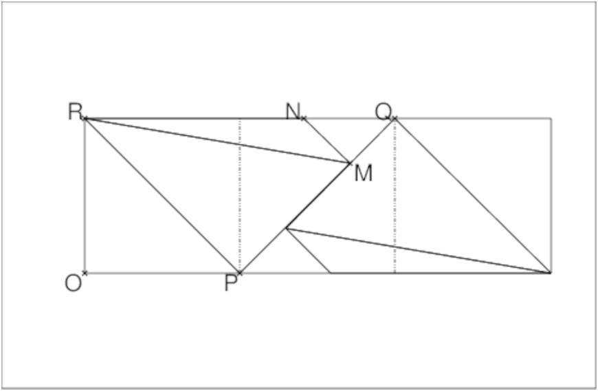
On réalise le puzzle.
On tape :
rectangle(-4,-1,1/3):;
T1:=triangle(-4+i,-3,-3+(1+i)/sqrt(2)):;T1;
T2:=triangle(-4+i,-3+(1+i)/sqrt(2),-4+sqrt(2)+i):;
T3:=symetrie(point(-5/2+i/2),T1):;T3;
T4:=symetrie(point(-5/2+i/2),T2):;
translation(3/2-3/2*i,T1,affichage=1+rempli);
R2:=rotation(-3+(1+i)/sqrt(2),pi/2,T2):;T2;
translation(3/2-3/2*i,R2,affichage=2+rempli);
A:=translation(3/2-3/2*i,rotation(-3+(1+i)/sqrt(2),pi/2,-4+i)):;
translation(affixe(A)+1,T3,affichage=3+rempli);
R4:=rotation(-2-1/sqrt(2)+i*(1-1/sqrt(2)),pi/2,T4):;
translation(affixe(A)+1,R4,affichage=4+rempli);
triangle(A,A+sqrt(2)*i,A+(i-1)/sqrt(2),affichage=5+rempli);
B:=translation(affixe(A)+1,rotation(-2-1/sqrt(2)+i*(1-1/sqrt(2)),
pi/2,point(-1))):;
triangle(B,B-i*sqrt(2),B+(1-i)/sqrt(2),affichage=6+rempli);
segment(B+(1-i)/sqrt(2),A+(i-1)/sqrt(2));
affichage(T1,1+rempli);
affichage(T2,2+rempli);
affichage(T3,3+rempli);
affichage(T4,4+rempli);
T5:=triangle(-1,-1+i,-2+i):;
affichage(T5,5+rempli);
T6:=triangle(-4,-3,-4+i):;
affichage(T6,6+rempli);
T7:=triangle(-3,-1-sqrt(2),-2-1/sqrt(2)+i*(1-1/sqrt(2))):;
affichage(T7,47+rempli);
T0:=triangle(-2+i,-4+sqrt(2)+i,-3+1/sqrt(2)+i*(1/sqrt(2))):;
affichage(T0,rempli);
triangle(-3/2-3*i/2,B+(1-i)/sqrt(2),A+(i-1)/sqrt(2),affichage=rempli);
triangle(-7/2+sqrt(2)-3*i/2,B+(1-i)/sqrt(2),A+(i-1)/sqrt(2),
affichage=47+rempli);
On obtient les 8 pièces du puzzle du rectangle 3*1 :
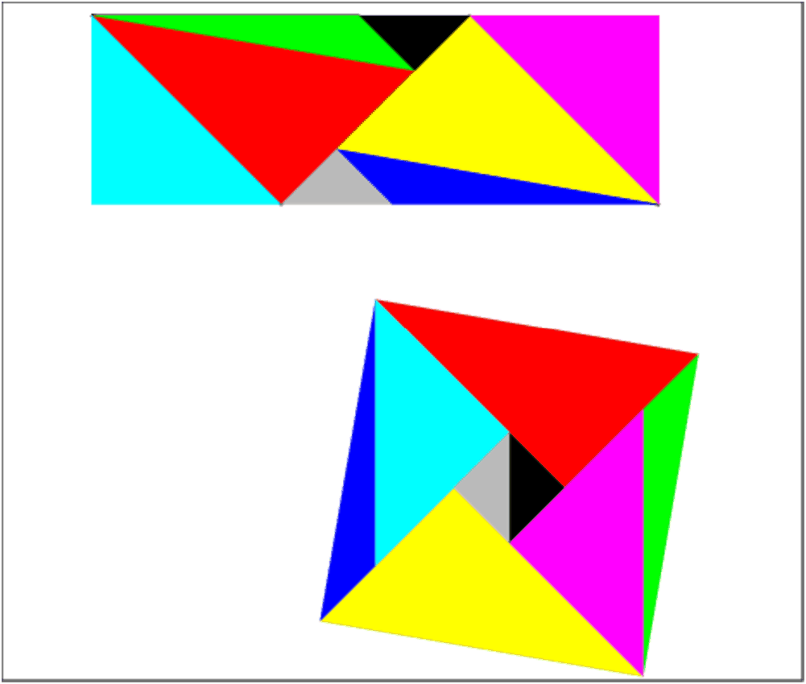
On utilise la formule :
√(3)2+12=22
Soit ABCD un rectangle de dimension 1*3.
Soit APQR un carré de dimension √3.
On dessine donc 2 triangles rectangles APD et BCM dont les côtés de
l’angle droit ont pour longueur 1 et √3.
On tape :
A:=point(0); B:=point(3); C:=point(3+i); D:=point(i); rectangle(A,B,C,D); P:=point(sqrt(3)); M:=point(3-sqrt(3)+i); Q:=point(sqrt(3)*(1+i)); R:=point(sqrt(3)*i); S:=point(sqrt(3)+i); T:=point(sqrt(3)+i*(sqrt(3)-1)); carre(A,P,Q,R, affichage=rouge); segment(P,D); segment(B,M); segment(R,M,affichage=bleu); segment(P,S, affichage=vert);
On obtient :
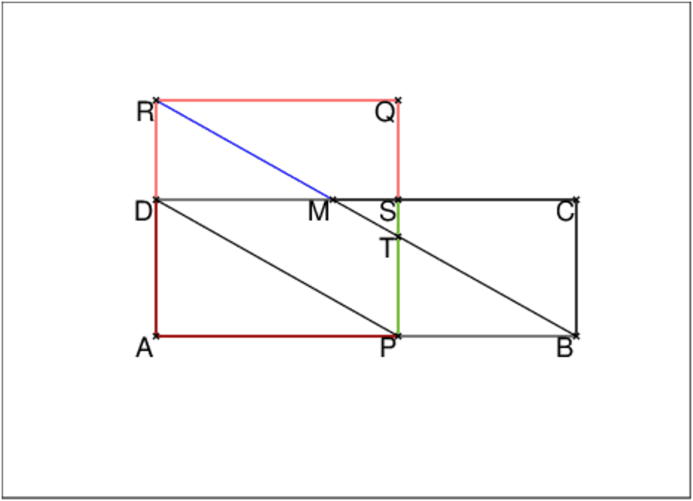
Les points B,M,R sont alignés car les droites BR et BM ont même pente
qui vaut √3/3=1/√3.
Les triangles rectangles BCM et TQR sont égaux (CM=QR=√3 et leurs
angles sont égaux).
Le point T intersection de BR et PQ a pour coordonnées :
√3,√3 −1 puisque :
PT/PB=PT/3−√3=AR/AB=√3/3
on a PT=√3−1
Les triangles rectangles PBT et DMR sont donc égaux (PT=DR=√3−1 et
leurs angles sont égaux).
On tape :
P1:=polygone(A,P,T,M,D,affichage=1+rempli); T2:=triangle(T,P,B,affichage=2+rempli); T4:=triangle(M,C,B,affichage=4+rempli) affichage(translation(-2*i,P1),1+rempli) affichage(translation(-sqrt(3)-i,T2),2+rempli); affichage(translation((sqrt(3)-3)*(1+i),T4),4+rempli);
On obtient donc 3 pièces :
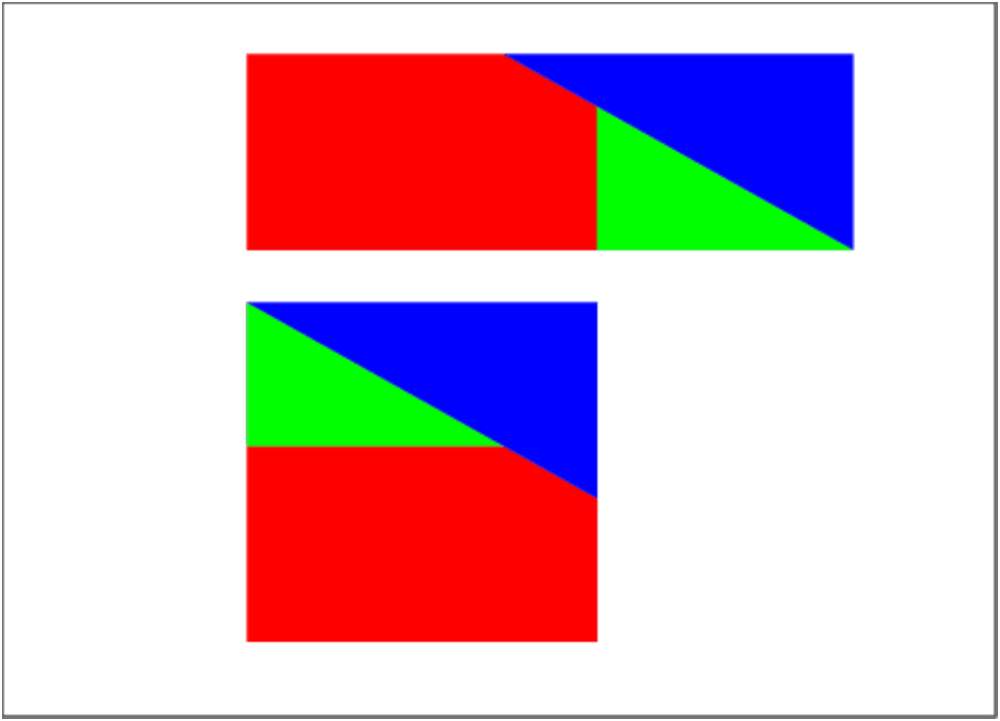
On peut faire 4 pièces.
On tape :
affichage(triangle(A,P,D),3+rempli); affichage(translation(-2*i,triangle(A,P,D)),3+rempli);
On obtient les 3 pièces du puzzle du rectangle 3*1 :
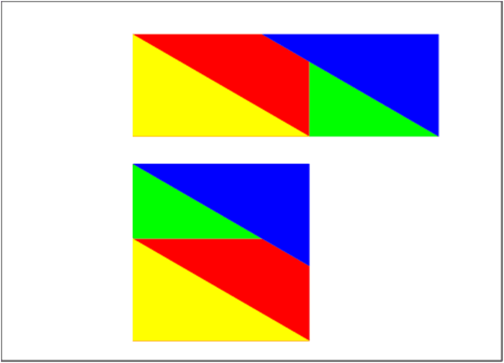
Dans la section suivante on fait une généralisation de ce découpage à
condition que la longueur du rectangle soit inférieure à 4 fois sa largeur.
Soit un rectangle de longueur b unités et de largeur a unités avec
a≤ b ≤ 4a.
On veut le partager en plusieurs morceaux pour pouvoir constituer avec
tous ces morceaux un carré.
On prend exemple sur le découpage précédent du rectangle 1x3.
Le carré reconstitué a pour côté √ab unités.
On considère le rectangle ABCD (AD=a et AB=√ab.
Soit APQR un carré de dimension √ab.
On dessine donc 2 triangles rectangles APD et BCM ayant comme côtés de
l’angle droit a et √ab.
On tape :
supposons(a=[2,0.0,10.0,0.1]); supposons(b=[2,a,4*a.0,0.1]); A:=point(0); B:=point(b); C:=point(b+i*a); D:=point(i*a); rectangle(A,B,C,D); P:=point(sqrt(a*b)); M:=point(b-sqrt(a*b)+i*a); Q:=point(sqrt(a*b)*(1+i)); R:=point(sqrt(a*b)*i); S:=point(sqrt(a*b)+i*a); T:=point(sqrt(a*b)+i*(sqrt(a*b)-a)); carre(A,P,Q,R, affichage=rouge); segment(P,D); segment(B,M); segment(R,M,affichage=bleu); segment(P,S, affichage=vert);
On obtient les 3 pièces du puzzle du rectangle b*a (pour a=1.5 et b=4) :
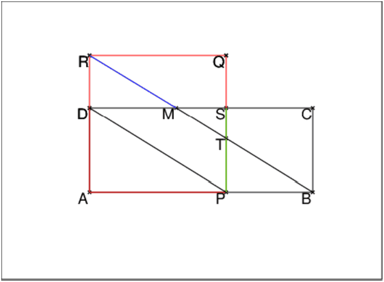
Les points BMR sont alignés car les droites BR et BM ont même
pente car a/√a*b=√a*b/b.
Les triangles rectangles BCM et TQR sont égaux (CM=QR=√ab et
leurs angles sont égaux).
Le point T intersection de BR et PQ a pour coordonnées :
√ab,√ab −a puisque :
PT/PB=PT/b−√ab=AR/AB=√ab/b
on a PT=√ab−a
Pour que T soit sur le segment PS on suppose que PT=√ab−a≤ a
c’est à dire a≤ b≤ 4a.
Les triangles rectangles PBT et DMR sont donc égaux (PT=DR=√ab−a
et leurs angles sont égaux).
On tape en notant c le paramètre qui produit la translation
−c*i de la pièce rouge :
supposons(a=[2,0.0,10.0,0.1]);
supposons(b=[2,a,4*a.0,0.1]);
supposons(c=[2,0.0,10.0,0.1]);
P1:=polygone(A,P,T,M,D,affichage=1+rempli);
T2:=triangle(T,P,B,affichage=2+rempli);
T4:=triangle(M,C,B,affichage=4+rempli);
affichage(translation(-c*i,P1),1+rempli)
affichage(translation(-sqrt(a*b)-c*i+a*i,T2),2+rempli);
affichage(translation(sqrt(a*b)-b-c*i+(sqrt(a*b)-a)*i,T4),
4+rempli);
On obtient donc 3 pièces du rectangle b*a pour a=1.5,b=3.1,c=2.5 :
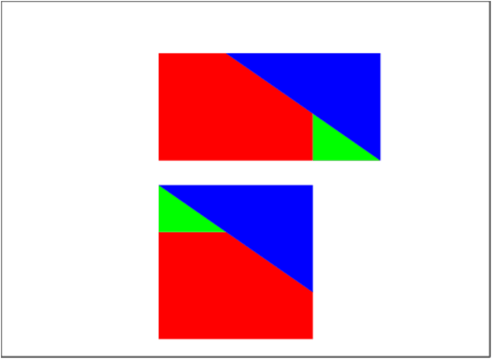
Faire un puzzle qui transforme un rectangle 1*6 en un carré.
Une solution:
Comme 6>4*1, on ne peut pas utiliser le découpage
ci-dessus en 3 morceaux.
On découpe le rectangle en 2 morceaux de 1*3, puis on fait le découpage
en 3 pièces d’un rectangle 2*3 : cela fait 5 pièces pour le rectangle 1*6.
On tape :
rectangle(0,3,2/3); triangle(3,3+2*i,3-sqrt(6)+2*i); carre(0,sqrt(6)); segment(i*sqrt(6),3); T1:=polygone(i,0,sqrt(6),sqrt(6)+i*(sqrt(6)-2),i+3-sqrt(6)/2):; affichage(T1,1+rempli); T2:=triangle(3,3+i,3-sqrt(6)/2+i):; affichage(T2,2+rempli); T3:=triangle(sqrt(6),3,sqrt(6)+i*(sqrt(6)-2)):; affichage(T3,3+rempli); T4:=polygone(6,6+i,6+i-sqrt(6),6-sqrt(6)/2):; affichage(T4,4+rempli); T5:=polygone(i+3,3,6-sqrt(6)/2,i+6-sqrt(6)):; affichage(T5,5+rempli); affichage(translation(-3*i,T1),1+rempli); affichage(translation(sqrt(6)-3+sqrt(6)*i-5*i,T2),2+rempli); affichage(translation(-sqrt(6)-i,T3),3+rempli); affichage(translation(-6+sqrt(6)+sqrt(6)*i-4*i,T4),4+rempli); affichage(translation(-3-2*i,T5),5+rempli);
On obtient donc 5 pièces :
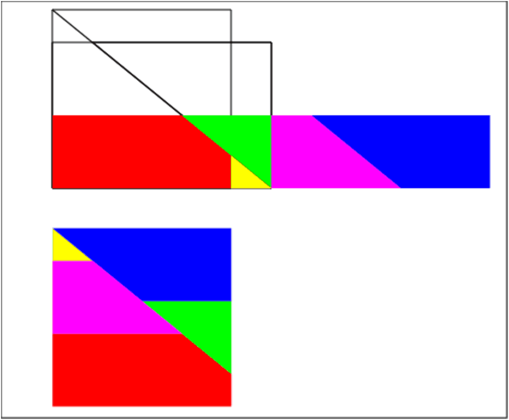
Une autre solution :
On découpe le rectangle en 2 morceaux de 1*3, puis on fait le découpage
en 3 pièces d’un rectangle a*(a+1) avec a=2 : cela fait 6 pièces pour
le rectangle 1*6.
On tape :
T1:=polygone(0,sqrt(2),sqrt(2)/2+i,i):; affichage(T1,1+rempli); T4:=triangle(3,3+sqrt(2)/2,3+i):; affichage(T4,4+rempli); T2:=triangle(1+(2-sqrt(2))*i,3-sqrt(2)+i,sqrt(2)/2+i):; affichage(T2,2+rempli); T3:=polygone(sqrt(2),3,3+i,3-sqrt(2)+i,1+(2-sqrt(2))*i):; affichage(T3,3+rempli); T5:=triangle(6-sqrt(2),6,6+i):; affichage(T5,5+rempli); T6:=polygone(6-sqrt(2),6+i,3+i,3+sqrt(2)/2):; affichage(T6,6+rempli); affichage(translation(3-2*i-i/2,T1),1+rempli); affichage(translation(-i-i/2,T4),4+rempli); affichage(translation(-3+sqrt(2)-3*i-i/2,T6),6+rempli); affichage(translation(sqrt(2)+-4*i-i/2,T2),2+rempli); affichage(translation(-2*i-i/2,T3),3+rempli); affichage(translation(-3-i-i/2,T5),5+rempli);
On obtient donc 6 pièces :
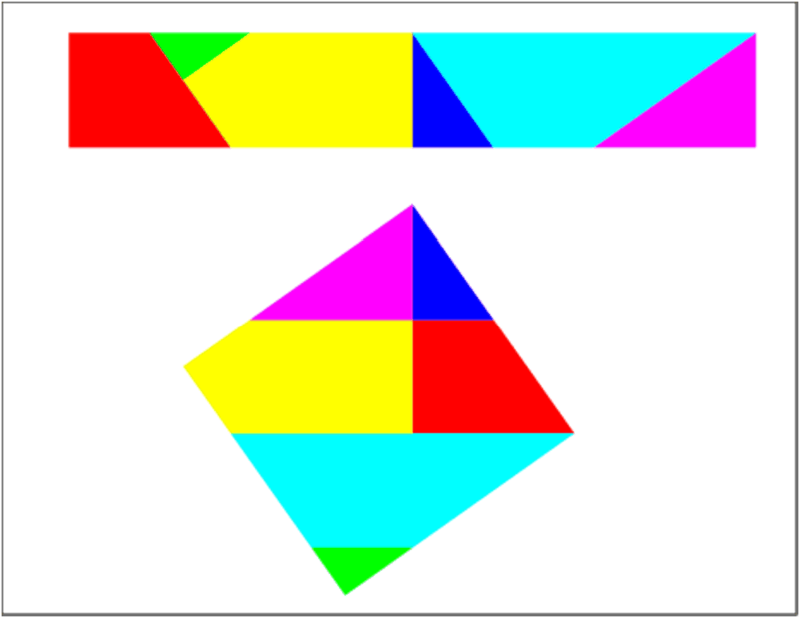
Encore une autre solution :
On utilise le découpage en 3 morceaux en le modifant : on rajoute un
quatrième morceau pour que le porcédé marche encore quand 4=4a<b=6<8a=8.
On tape :
rectangle(0,6,1/6);
carre(0,sqrt(6));
segment(6,sqrt(6)*i);
segment(i*2,6-2*sqrt(6)+i*2);
segment(2*sqrt(6),2*sqrt(6)+i*(sqrt(6)-2));
T1:=polygone(0,sqrt(6),sqrt(6)+i,i):;
T2:=polygone(sqrt(6)+i,sqrt(6),2*sqrt(6),
2*sqrt(6)+i*(sqrt(6)-2),6-sqrt(6)+i):;
T3:=triangle(6,6+i,6-sqrt(6)+i):;
T4:=triangle(2*sqrt(6),6,2*sqrt(6)+i*(sqrt(6)-2)):;
affichage(T1,1+rempli);
affichage(T2,2+rempli);
affichage(T3,3+rempli);
affichage(T4,4+rempli);
On obtient :
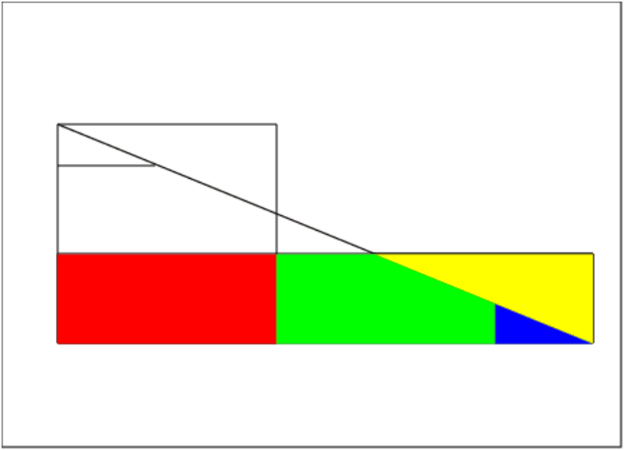
La droite d’équation y=−√6/6*x+sqrt(6) détermine un petit triangle
rectangle (en noir) qui se trouve à l’extérieur du rectangle et du carré.
Ce triangle a pour côté de l’angle droit : 6−2√6 et √6−2.
On le translate dans le rectangle (en bleu) et dans le carré.
On obtient donc les 4 pièces ci dessus.
On réalise le puzzle avec ces 4 pièces, on tape :
affichage(T1,1+rempli); affichage(T2,2+rempli); affichage(T3,3+rempli); affichage(T4,4+rempli); affichage(translation(1.5*i,T1),1+rempli); affichage(translation(2.5*i-sqrt(6),T2),2+rempli); affichage(translation(sqrt(6)*i+0.5*i-6+sqrt(6),T3),3+rempli); affichage(translation(3.5*i-2*sqrt(6),T4),4+rempli);
On obtient :
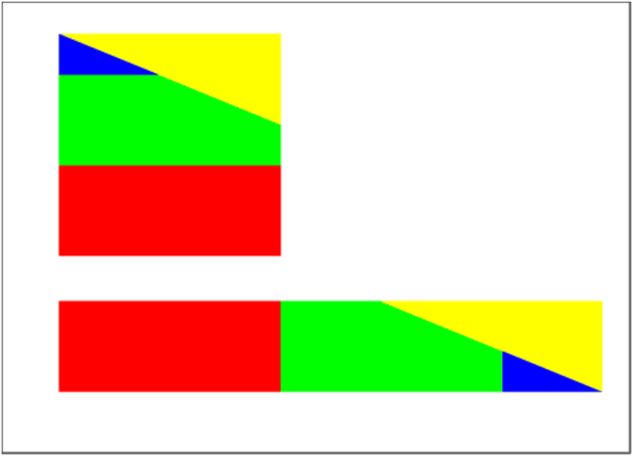
On peut transformer un rectangle de dimension a*b en un triangle isocèle
à l’aide de 4 pièces : 2 triangles rectangles et 2 trapèzes rectangles.
Le triangle est obtenu en faisant subir au triangle LDU (resp NUA) une
rotation de centre L (resp N) et d’angle π : le triangle a comme base
de longueur 2*a et la hauteur reliée à cette base a pour longueur b.
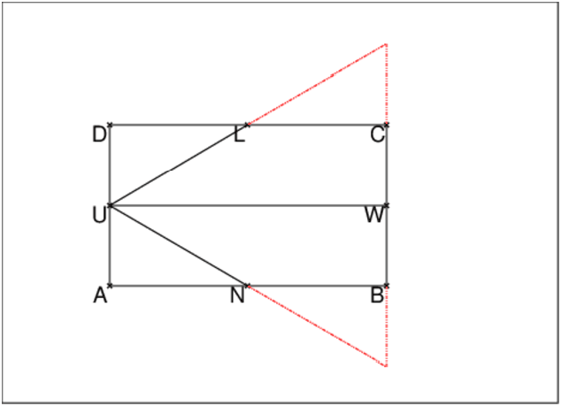
Remarques
On peut aussi de la même façon transformer un rectangle de dimension
a*b en un triangle isocèle de base 2*b et de hauteur a relative à
cette base.
On remarquera aussi qu’il suffit de 3 pièces pour réaliser cette
transformation (le partage UW etant inutile !).
À condition que les angles de la base b soient aigus, tout triangle de base
b et de hauteur 2*a relative à cette base se transforme de cette façon
en un rectangle a*b.
On va donc transformer selon cette mèthode un rectangle 1*√3 en un
triangle équilatéral et en un carré.
On tape :
b:=sqrt(3);a:=1; A:=point(0); B:=point(b); C:=point(b+i*a); D:=point(i*a); rectangle(A,B,C,D); P:=point(sqrt(a*b)); M:=point(b-sqrt(a*b)+i*a); Q:=point(sqrt(a*b)*(1+i)); R:=point(sqrt(a*b)*i); S:=point(sqrt(a*b)+i*a); T:=point(sqrt(a*b)+i*(sqrt(a*b)-a)); carre(A,P,Q,R, affichage=rouge); segment(P,D); segment(B,M); segment(R,M,affichage=bleu); segment(P,S, affichage=vert); U:=point(a*i/2); V:=point(a*i/2+b-sqrt(b)/2); W:=point(b+a*i/2); segment(U,W); segment(U,L); segment(U,N); N:=point(b/2); O:=point(b/2+i*a/2); L:=point(b/2+i*a); F:=inter_unique(droite(U,L),droite(M,B));
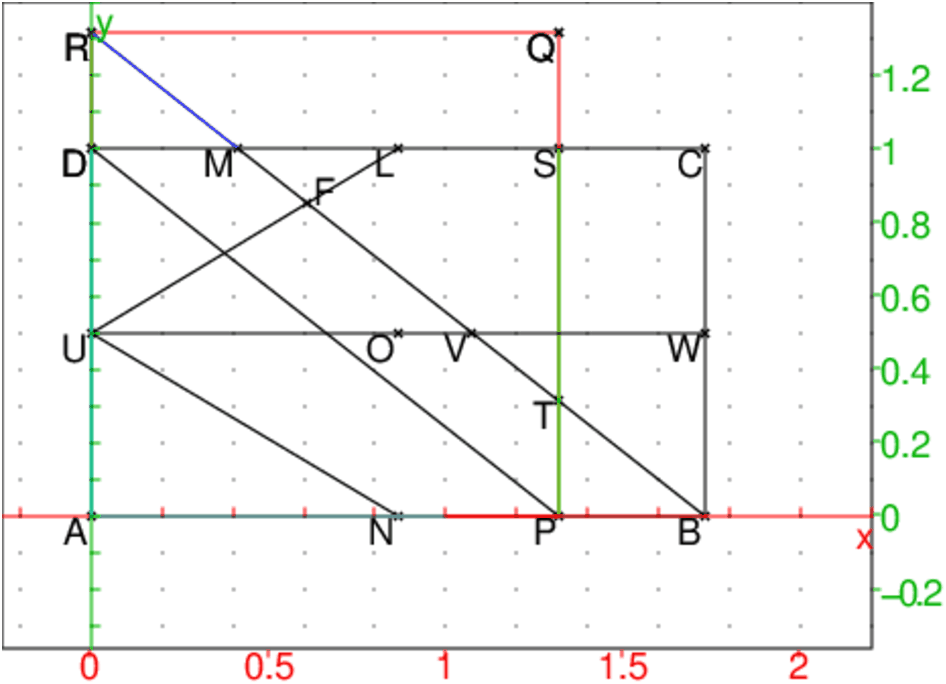
Puis, on tape :
c:=3/2;
T0:=triangle(A,N,U,affichage=0+rempli);
T1:=polygone(N,P,T,V,U,affichage=1+rempli);
T2:=triangle(T,P,B,affichage=2+rempli);
T3:=triangle(B,W,V,affichage=3+rempli);
T4:=polygone(C,S,L,F,V,W,affichage=4+rempli);
T5:=triangle(U,V,F,affichage=5+rempli);
T6:=triangle(F,L,M,affichage=6+rempli);
T7:=polygone(F,M,D,U,affichage=47+rempli);
affichage(translation(-c*i,T1),1+rempli);
affichage(translation(-sqrt(a*b)-c*i+a*i,T2),2+rempli);
affichage(translation(sqrt(a*b)-b-c*i+(sqrt(a*b)-a)*i,T4),
4+rempli);
affichage(translation(sqrt(a*b)-b-c*i+(sqrt(a*b)-a)*i,T6),
6+rempli);
affichage(translation(sqrt(a*b)-b-c*i+(sqrt(a*b)-a)*i,T3),
3+rempli);
affichage(translation(-c*i,T1),1+rempli);
affichage(translation(-c*i,T0),0+rempli);
affichage(translation(-c*i,T7),47+rempli);
affichage(translation(-c*i,T5),5+rempli);
affichage(translation(3/2-3*c/4*i,T1),1+rempli);
affichage(rotation(N+3/2-3*c/4*i,pi,translation(3/2-3*c/4*i,T0)),
0+rempli);
affichage(translation(3/2-3*c/4*i,T2),2+rempli);
affichage(translation(3/2-3*c/4*i,T3),3+rempli);
affichage(translation(3/2-3*c/4*i,T4),4+rempli);
affichage(translation(3/2-3*c/4*i,T5),5+rempli);
affichage(rotation(L+3/2-3*c/4*i,pi,
translation(3/2-3*c/4*i,T6)),6+rempli);
affichage(rotation(L+3/2-3*c/4*i,pi,
translation(3/2-3*c/4*i,T7)),47+rempli);
On obtient donc 8 pièces :
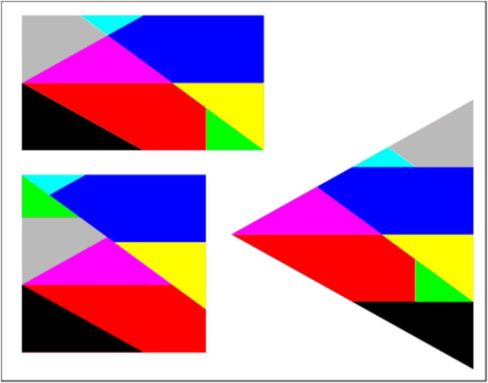
On obtient 6 pièces si on ne fait pas le partage UW:
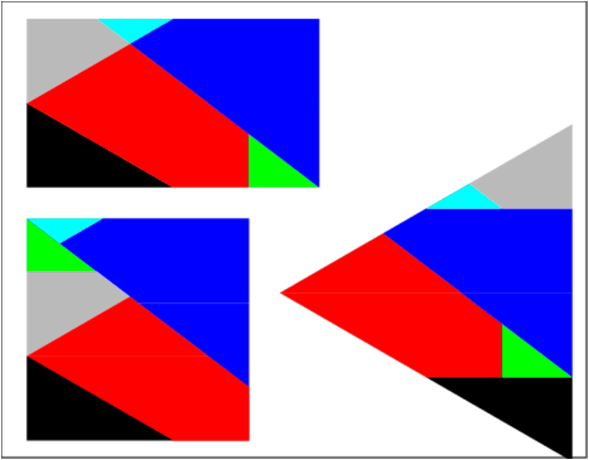
On tape :
T3:=triangle(sqrt(3),sqrt(sqrt(3)),sqrt(sqrt(3))+i*(sqrt(sqrt(3))-1)):;
P:=inter_unique(droite(y=sqrt(3)/3*x),y=-sqrt(sqrt(3)/3)*(x-sqrt(3)));
T1:=polygone(0,sqrt(sqrt(3)),sqrt(sqrt(3))+i*(sqrt(sqrt(3))-1),P):;
T2:=triangle(sqrt(3),P,sqrt(3)+i):;
T4:=triangle(sqrt(3)+i,P,i+sqrt(3)-sqrt(sqrt(3))):;
T5:=polygone(i,i/2+sqrt(3)/2,P,i+sqrt(3)-sqrt(sqrt(3))):;
T6:=triangle(i,0,i/2+sqrt(3)/2):;
affichage(T1,1+rempli);
affichage(T6,6+rempli);
affichage(T2,2+rempli);
affichage(T3,3+rempli);
affichage(T4,4+rempli);
affichage(T5,5+rempli);
affichage(translation(-2*i+i/2,T1),1+rempli);
affichage(translation(-2*i+i/2,T6),6+rempli);
affichage(translation(-2*i+i/2,T5),5+rempli);
affichage(translation(-3*i-sqrt(3)+sqrt(sqrt(3))+i*sqrt(sqrt(3))+i/2,T2),
2+rempli);
affichage(translation(-3*i-sqrt(3)+sqrt(sqrt(3))+i*sqrt(sqrt(3))+i/2,T4),
4+rempli);
affichage(translation(-i-sqrt(sqrt(3))+i/2,T3),3+rempli);
affichage(translation(-i/2+3/2,T1),1+rempli);
affichage(translation(-i/2+3/2,T3),3+rempli);
affichage(translation(-i/2+3/2,T2),2+rempli);
affichage(translation(-3*i/2+3/2,T4),4+rempli);
affichage(translation(-3*i/2+3/2,T5),5+rempli);
affichage(translation(-3/2*i+3/2+sqrt(3),rotation(0,pi/3,T6)),6+rempli);
On obtient 6 pièces :
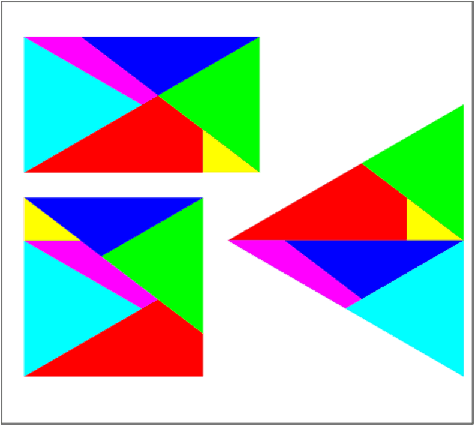
Voici les 5 pièces d’un puzzle qui peuvent s’assembler soit en un carré
soit en un rectangle, soit en 2 paralélogramme, soit en un triangle
équilatéral :

On choisit au départ un rectangle de côtés de longueur :
√6 et b=√6*sqrt 3/4.
Ce rectangle a la même surface qu’un triangle équilatéral de côté
√6 et a aussi la même surface qu’un carré de côté
a=√3*√3/2.
On tape :
a:=sqrt(3*sqrt(3)/2); b:=sqrt(3)/4*sqrt(6); rectangle(0,sqrt(6),sqrt(3)/4); A:=point(i*b)+sqrt(6)/4); B:=point(i*b+3*sqrt(6)/4); T1:=triangle(0,A,i*b); T2:=triangle(sqrt(6),B,i*b+sqrt(6)); T3:=triangle(sqrt(6),B,sqrt(6)-a+i*b); T4:=triangle(a,sqrt(6),a+i*(a-b)); T5:=polygone(A,0,a,a+i*(a-b),i*b+sqrt(6)-a);
On obtient :

On remarque qu’il suffit de faire :
rotation(A,-pi,T1); rotation(B,pi,T2);
pour obtenir un triangle équilatéral.
Et on sait facilement transformer ce rectandle en carré avec
les 3 pièces : (T1+ T5),T4, (T2+T3) selon la méthode
de la section 8.9.
On tape :
//le rectangle affichage(T1,1+rempli); affichage(T2,2+rempli); affichage(T3,3+rempli); affichage(T4,4+rempli); affichage(T5,5+rempli); //le triangle equilateral affichage(translation(2*i,T5),5+rempli); affichage(translation(2*i,T4),4+rempli); affichage(translation(2*i,T3),3+rempli); affichage(translation(2*i,rotation(B,pi,T2)),2+rempli); affichage(translation(2*i,rotation(A,-pi,T1)),1+rempli); //le carre affichage(translation(2*i+3,T5),5+rempli); affichage(translation(2*i+3,T1),1+rempli); affichage(translation(2*i+i*(a-b)+3+a-sqrt(6),T2),2+rempli); affichage(translation(2*i+i*(a-b)+3+a-sqrt(6),T3),3+rempli); affichage(translation(2*i+i*b+3-a,T4),4+rempli); //le parallelogramme de base sqrt(6) et de hauteur b affichage(translation(3.5,T5),5+rempli); affichage(translation(3.5,T4),4+rempli); affichage(translation(3.5,T3),3+rempli); affichage(translation(3.5,T2),2+rempli); affichage(translation(3.5+sqrt(6),T1),1+rempli); //l'autre parallelogramme de base a et de hauteur a affichage(translation(2.5*i+5,T5),5+rempli); affichage(translation(2.5*i+i*b+5-a,T4),4+rempli); affichage(translation(2.5*i+5,T1),1+rempli); affichage(translation(2.5*i-i*b+5+a-sqrt(6),T2),2+rempli); affichage(translation(2.5*i-i*b+5+a-sqrt(6),T3),3+rempli);
On obtient les 5 quadilatères du début :

Voici les 4 pièces d’un puzzle qui peuvent s’assembler soit en un carré
soit en un triangle équilatéral :

Etant donné un carré, trouver la construction de ces pièces et prouvez
que l’on a bien obtenu après réorganisation un triangle équilatéral.
La solution
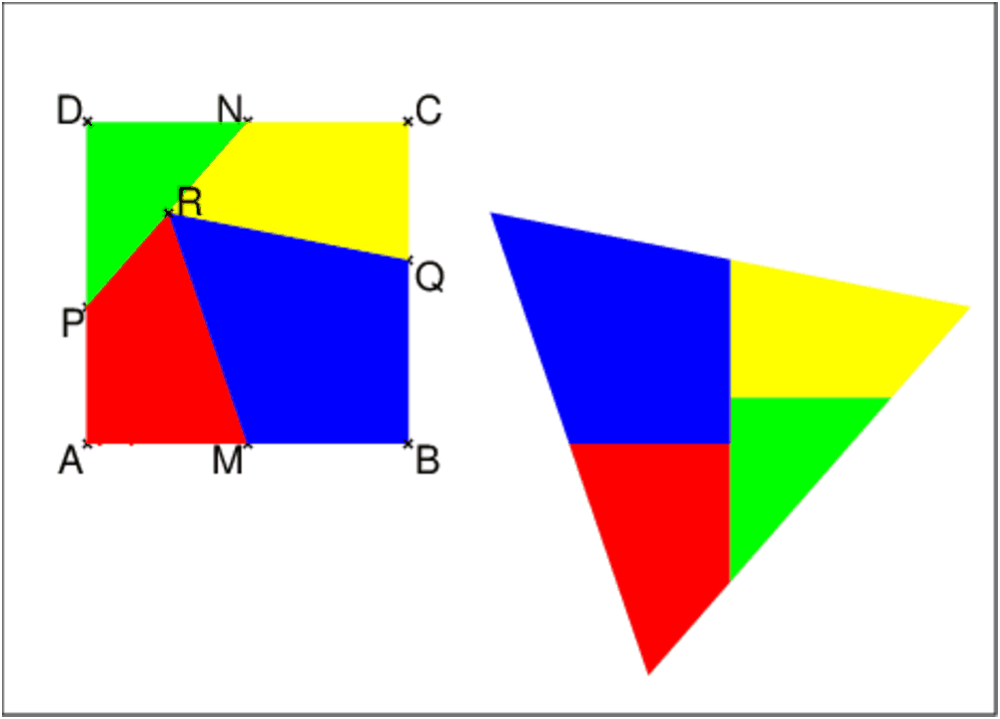
Si le carré est de côté 2a et le côté du triangle
équilatéral est de côté 2b.
On doit avoir (égalité des aires):
4a^2=b^2*sqrt(3)
On pose l:=sqrt(b^2-a^2).
On voit que si les figures sont exactes pour obtenir le triangle à partir du
carré de côté 2a il faut, sans bouger la pièce bleue,
faire subir :
On doit donc avoir :
le côté du triangle équilatéral 2b est égal à PR+PN+RN=2PN=2b,
AM=MB donc M est le milieu de AB,
DN=NC donc N est le milieu de CD,
CQ+DP=AP+QB=2a
RM=RQ=b
PRM=MRQ=QRN=π/3
4a2=b2√3 car le carré et le triangle ont même surface.
Donc RMQ est équilatéral puisque c’est un triangle isocèle ayant un
angle de π/3 et donc
RMQ=PRM=QRN=π/3.
Puisque on a aussi MQR=QRN=π/3, on en déduit
que :
MQ est parallèle à PN et NQ est parallèle à PM.
les triangles DNP et BMQ sont égaux.
les triangles AMP et CNQ sont égaux.
le quadrilatère PMQN est un parallélogramme.
On a donc AP=QC=2a−l et PD=BQ=l et
aire(PMQN)=4a2−al−(2a−l)a=2a2=h*√a2+l2=hb si h est la
distance entre les parallèles PN et MQ.
Donc hb=2a2=b2√3/2 et on en déduit h=b√3/2.
Réciproquement, si PD=BQ=l et si RMQ est équilatéral alors :
MQ est parallèle à PN et
R se trouve sur PN car la hauteur du triangle RMQ qui vaut
b√(3)/2 est aussi égale à la distance h entre
les parallèles PN et MQ.
PRM=MRQ=QRN=π/3
Donc
PRM=MQR=π/3 et
QRN=MQR=π/3
Autre démonstration
Si le carré a comme côté 2a et le triangle équilatéral a comme
côté 2b on a :
4a2=b2√3 car le carré et le triangle ont même surface.
Posons l=PD on a b2=PN2=l2+a2=4a2/√(3)
Donc l2=a2(4√3/3−1)
Si PD=BQ=l et AM=MB=DN=NC=a on a :
PN=MQ et PM=NQ donc la quadrilatère MPNQ est un parallélogramme.
NM est paralléle à DP donc NPD=PNM=α.
sin(NPD)=a/b et sin(PNM)=h/2a donc
h=2a2/b=b√3/2.
Le point R est donc l’intersection de la médiatrice de MQ avec PN.
Le triangle PQR est donc isocèle est sa hauteur issue de R vaut
h=bb√3/2 donc le triangle PQR est équilatéral.
Comment construire le point R ?
On a montré que R est le transformé de Q dans la rotation de centre M
et d’angle π/3.
On tape pour avoir les pièces du puzzle (on prend pour simplifier a=1) :
l:=sqrt(4*sqrt(3)/3-1); M:=point(1):; P:=point(i*(2-l)):; Q:=point(2+i*l):; R:=rotation(M,pi/3,Q):; quadrilatere(M,2,Q,R,affichage=4+rempli); quadrilatere(Q,2+2*i,1+2i,R,affichage=3+rempli); triangle(P,2i,1+2i,affichage=2+rempli); quadrilatere(0,M,R,i*(2-l),affichage=1+rempli);
On obtient :
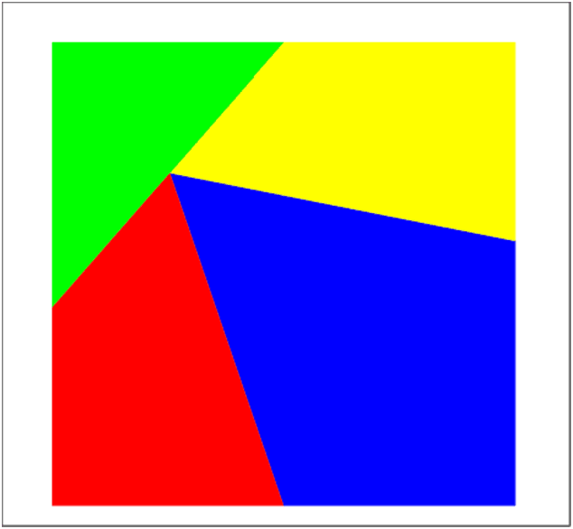
Comment construire les pièces à partir d’un triangle équilatèral
Soit un triangle de côté 2b=2.
On tape :
triangle_equilateral(0,2,R)); b:=1; a2:=b^2*sqrt(3)/4; l2:=1-a2; M:=milieu(0,R); Q:=milieu(2,R); B:=inter_unique(cercle(M,sqrt(a2)),cercle(Q,sqrt(l2)),point(2)); T4:=polygone(R,M,B,Q); P:=inter_unique(droite(Q,B),droite(0,2)); T1:=polygone(0,P,B,M); S:=P+1; N:=inter_unique(droite(B,Q),perpendiculaire(S,droite(B,Q))); T3:=polygone(2,Q,N,S); T2:=triangle(N,P,S);
On obtient :
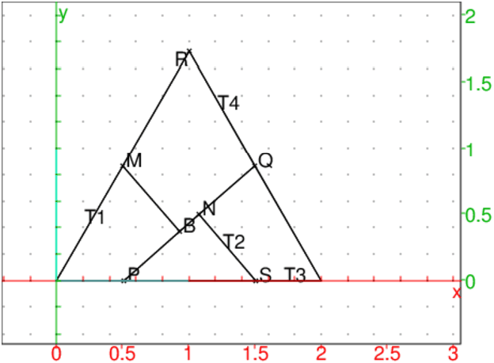
Pour animer la figure
On peut animer la figure, soit manuellement avec les curseurs, soit avec la
commande animation.
On tape :
animtri(t1,t2,t3):={
local L,l,M,P,P1,Q,R;
l:=sqrt(4*sqrt(3)/3-1);
M:=point(1):;
P:=point(i*(2-l)):;
P1:=symetrie(M,P):;
Q:=point(2+i*l):;
R:=rotation(M,pi/3,Q):;
L:=quadrilatere(M,2,Q,R,affichage=4+rempli);
L:=L,affichage(rotation(M,t1,quadrilatere(0,M,R,i*(2-l))),1+rempli);
L:=L,affichage(rotation(Q,-t3,quadrilatere(Q,2+2*i,1+2i,R)),3+rempli);
L:=L,affichage(translation((P1-P)*t2,triangle(i*(2-l),2i,1+2i)),2+rempli);
return L;
}:;
Puis on utilise des paramètres dans un écran de géométrie, on tape :
supposons(t1=[0.0,0,3.14,0.1]); supposons(t3=[0.0,0,3.14,0.1]); supposons(t2=[0.0,0,1,0.1]); animtri(t1,t2,t3);
En faisant bouger les curseurs t1,t3 et t2, on voit les
pièces du puzzle se déplacer selon les transformations annoncées.
Ou bien :
On crée une animation pour voir les déplacements, pour cela on
crée les listes que la commande animation va utiliser.
On tape :
T1:=seq([animtri(t1,0,0)],t1=0..3.14,3.14/10):; T3:=seq([animtri(3.14,0,t3)],t3=0..3.14,3.14/10):; T2:=seq([animtri(3.14,t2,3.14)],t2=0..1,0.1):; T4:=seq([animtri(t1,1,3.14)],t1=3.14..0,3.14/10):; T6:=seq([animtri(0,1,t3)],t3=3.14..0,3.14/10):; T5:=seq([animtri(0,t2,0)],t2=1..0,0.1):;
Puis on tape :
animation(T1,T3,T2,T4,T6,T5)
On définit les points utiles.
On tape :
LP:=[point(exp(k*i*pi/6))$(k=0..11)]:; [A,B,C,D,E,F,G,H,I,J,K,L]:=LP; polygone(LP); triangle_equilateral(A,B,M); triangle_equilateral(J,I,N); triangle_equilateral(F,E,P); O:=isobarycentre(F,M,I);
On obtient :
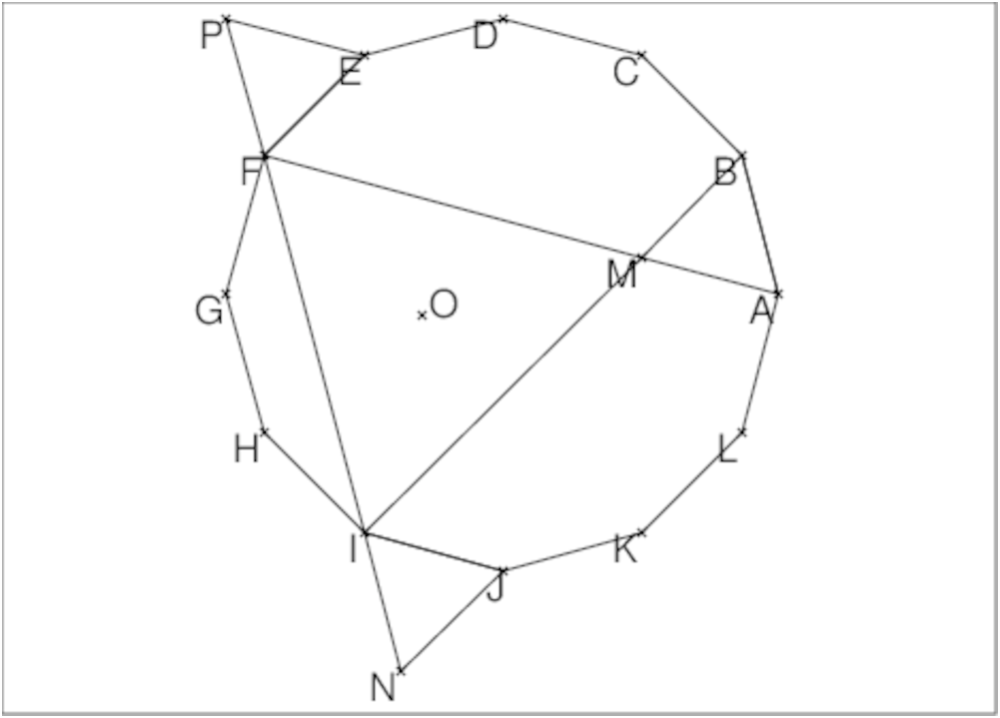
Exercice
On trace le dodécacone ABCDEFGHIJKL inscrit dans un cercle de rayon 1
unité et le triangle équilatèral ABM comme ci-dessus, puis on trace
les 4 segments : cela détermine 6 régions :
segment(A,I); segment(B,F); segment(A,F); segment(B,I);
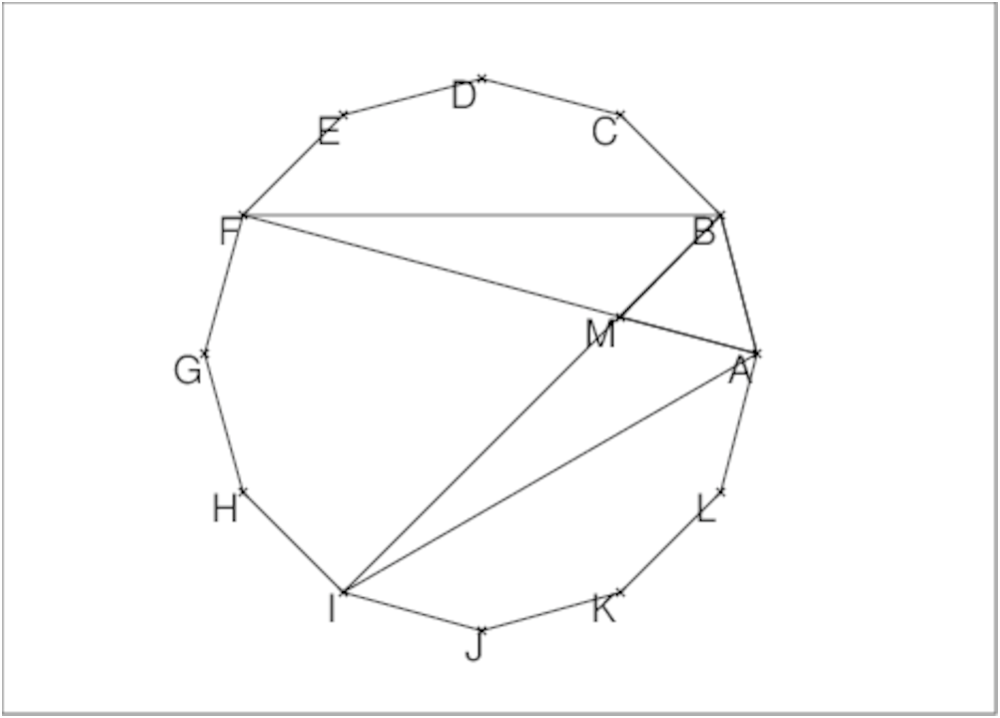
Montrer que AF et BI se coupent en M sommet du triangle équilatèral
ABM.
Montrer que le triangle FMI est équilatéral.
Calculer les angles des triangles MBF et MAI.
Calculer les angles des triangles AIL et BCF.
Montrer que AI=BF=√3
Exercice
Soit un dodécaèdre inscrit dans un cercle de rayon 1 unité.
Calculer son aire.
Calculer le côté du carré qui a la même aire que ce dodécagone.
Réponse
Aire du dodécaèdre= 12sin(2*pi/12)/2=6sin(pi/6)=3 unité*unité.
Le côté du carré qui a la même aire est donc : √3 unités.
Le découpage
On découpe le dodécaèdre en 6 morceaux, puis on forme un carré avec
ces 6 morceaux.
D’après ce qui précède AI et BF ont pour longueur le côté du
carré cherché.
On tape :
P1:=polygone(A,I,J,K,L):;
affichage(P1,1+rempli);
P2:=polygone(B,C,D,E,F):;
affichage(P2,2+rempli);
P3:=triangle_equilateral(A,B,M):;
affichage(P3,3+rempli);
P4:=triangle(M,I,A):;
affichage(P4,4+rempli);
P5:=triangle(M,F,B):;
affichage(P5,5+rempli);
P6:=polygone(F,G,H,I,M):;
affichage(P6,6+rempli);
O:=isobarycentre(F,M,I):;
affichage(translation(3,P6),6+rempli);
affichage(translation(3,rotation(O,2*pi/3,P4)),4+rempli)
affichage(translation(3,rotation(O,-2*pi/3,P5)),5+rempli);
affichage(translation(3-A+H,P3),3+rempli);
triangle_equilateral(J,I,N):;
affichage(translation(3,rotation(
isobarycentre(I,J,N),pi/2+pi/6,P1)),1+rempli);
triangle_equilateral(F,E,P):;
affichage(translation(3,rotation(
isobarycentre(F,E,P),-pi/2-pi/6,P2)),2+rempli);
On obtient :
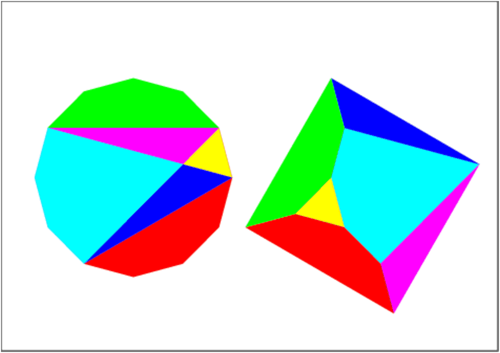
On peut animer la figure, manuellement avec les curseurs.
On tape :
affichage(P6,6+rempli); supposons(t1=[1.0,0,1,0.1]); affichage(rotation(isobarycentre(I,J,N),-t1*4*pi/3,P1),1+rempli) ; supposons(t2=[1.0,0,1,0.1]); affichage(rotation(isobarycentre(F,E,P),(t2)*4*pi/3,P2),2+rempli); supposons(t3=[1.0,0,1,0.1]); affichage(translation(t3*(H-A),P3),3+rempli); supposons(t4=[1.0,0,1,0.1]); affichage(rotation(O,t4*2*pi/3,P4),4+rempli); supposons(t5=[1.0,0,1,0.1]); affichage(rotation(O,-t5*2*pi/3,P5),5+rempli); O; N; P;
On peut aussi animer la figure avec la commande animation.
On tape (attention les variables P1,..P6,A,H,E,F,I,J,n,P sont globales) :
animdode(t1,t2,t3,t4,t5):={
local L;
L:=NULL;
L:=L,affichage(P6,6+rempli);;
L:=L,affichage(rotation(isobarycentre(I,J,N),-t1*4*pi/3.,P1),
1+rempli);
L:=L,affichage(rotation(isobarycentre(F,E,P),(t2)*4*pi/3.,P2),
2+rempli);
L:=L,affichage(translation(t3*(H-A),P3),3+rempli);
L:=L,affichage(rotation(O,t4*2*pi/3,P4),4+rempli);
L:=L,affichage(rotation(O,-t5*2*pi/3,P5),5+rempli);
return L;
}:;
Puis si on utilise un seul paramètre (tout bouge en même temps !!!):
K1:=seq([animdode(t1,t1,t1,t1,t1)],t1=0.0..1.0,0.1):;
K2:=seq([animdode(t1,t1,t1,t1,t1)],t1=1.0..0.0,0.1):;
animation(K1,K2)
Ou bien si on utilise 5 paramètres :
T1:=seq([animdode(t1,0,0,0,0)],t1=0.0..1.0,0.1):; T2:=seq([animdode(1,t2,0,0,0)],t2=0.0..1.0,0.1):; T3:=seq([animdode(1,1,t3,0,0)],t3=0.0..1.0,0.1):; T4:=seq([animdode(1,1,1,t4,0)],t4=0.0..1.0,0.1):; T5:=seq([animdode(1,1,1,1,t5)],t5=0.0..1.0,0.1):; T6:=seq([animdode(1,1,1,1,t5)],t5=1.0..0.0,0.1):; T7:=seq([animdode(1,1,1,t4,0)],t4=1.0..0.0,0.1):; T8:=seq([animdode(1,1,t3,0,0)],t3=1.0..0.0,0.1):; T9:=seq([animdode(1,t2,0,0,0)],t2=1.0..0.0,0.1):; T0:=seq([animdode(t1,0,0,0,0)],t1=1.0..0.0,0.1):;
Puis on tape :
animation(T1,T2,T3,T4,T5,T6,T7,T8,T9,T0)
Ou encore si on n’utilise que 4 paramètres (en échangeant la pièce bleue
avec la pièce violette à l’aide d’un seul paramètre).
Q1:=seq([animdode(t1,0,0,0,0)],t1=0.0..1.0,0.1):; Q2:=seq([animdode(1,t2,0,0,0)],t2=0.0..1.0,0.1):; Q3:=seq([animdode(1,1,t3,0,0)],t3=0.0..1.0,0.1):; Q4:=seq([animdode(1,1,1,t4,t4)],t4=0.0..1.0,0.1):; Q7:=seq([animdode(1,1,1,t4,t4)],t4=1.0..0.0,0.1):; Q8:=seq([animdode(1,1,t3,0,0)],t3=1.0..0.0,0.1):; Q9:=seq([animdode(1,t2,0,0,0)],t2=1.0..0.0,0.1):; Q0:=seq([animdode(t1,0,0,0,0)],t1=1.0..0.0,0.1):;
Puis on tape :
animation(Q1,Q2,Q3,Q4,Q7,Q8,Q9,Q0)
On considère un rectangle de côtés 3 et √3/2.
On transforme facilement ce rectangle en un hexagone de côté 1 avec 3
pièces.
On sait transformer ce rectangle en un carré avec 3 pièces selon la
méthode vue en section 8.9.
Avec 6 pièces on peut passer de l’hexagone au carré via le rectangle.
On tape :
a:=sqrt(3*sqrt(3)/2); b:=sqrt(3)/2; d:=droite(3,3-a+i*b):; Q:=inter_unique(droite(y=b),d):; R:=inter_unique(droite(x=a),d):; P1:=polygone(R,Q,1/2+i*b,1,a):; affichage(P1,1+rempli); P2:=polygone(R,a,2,S):; affichage(P2,2+rempli); P3:=polygone(Q,S,5/2+i*b):; affichage(P3,3+rempli); P4:=triangle(S,2,3):; affichage(P4,4+rempli); P5:=polygone(S,3,3+i*b,5/2+i*b):; affichage(P5,5+rempli); P6:=polygone(i*b,0,1,1/2+i*b):; affichage(P6,6+rempli); affichage(translation(i+2,P1),1+rempli); affichage(translation(i+2,P2),2+rempli); affichage(translation(i+2,P3),3+rempli); affichage(translation(i+i*b-3/2+2,P4),4+rempli); affichage(translation(i+i*b-3/2+2,P5),5+rempli); affichage(translation(i+i*b+3/2+2,P6),6+rempli); affichage(translation(i,P1),1+rempli); affichage(translation(i,P6),6+rempli); affichage(translation(i+i*b-a,P2),2+rempli); affichage(translation(i+i*b-a,P4),4+rempli); affichage(translation(i+i*(a-b)-3+a,P3),3+rempli); affichage(translation(i+i*(a-b)-3+a,P5),5+rempli);
On obtient :
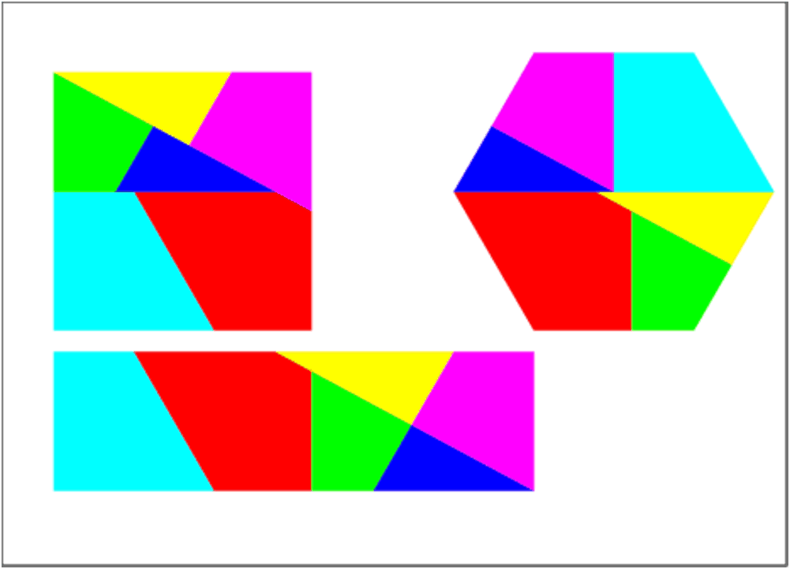